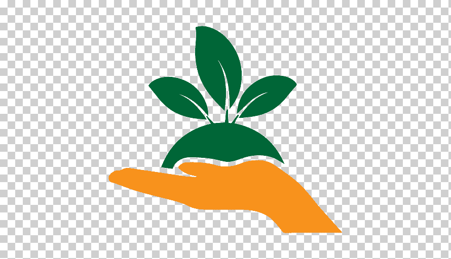
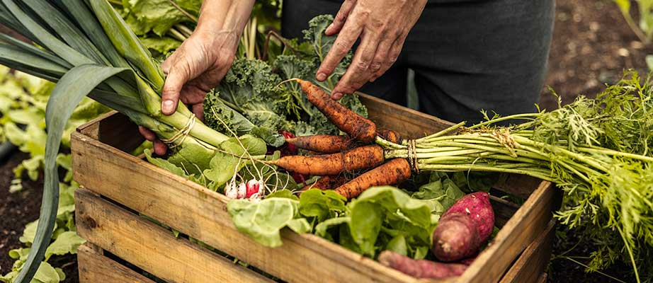
Dato Curioso
 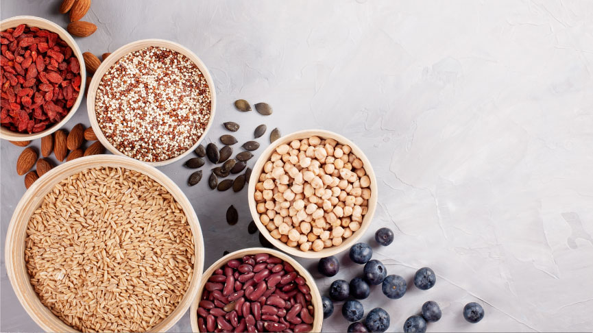
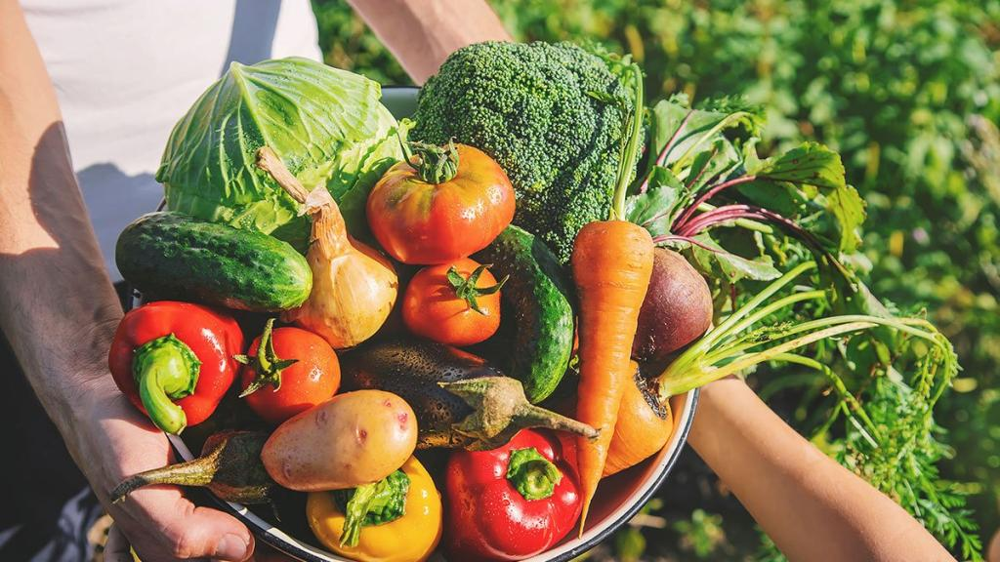
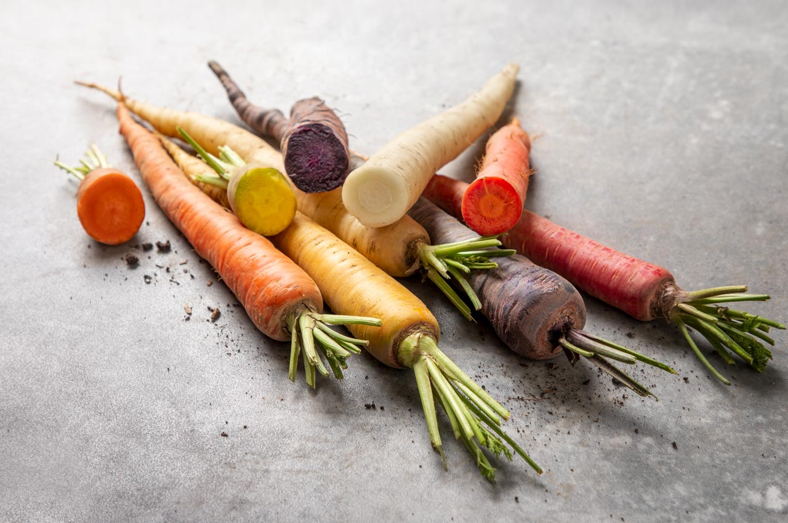
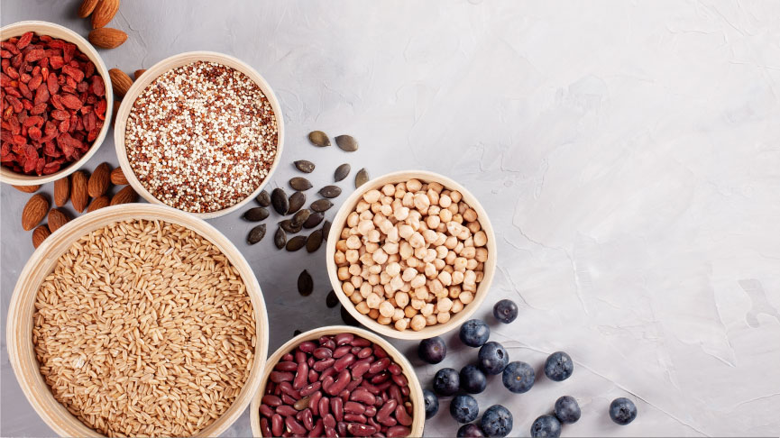
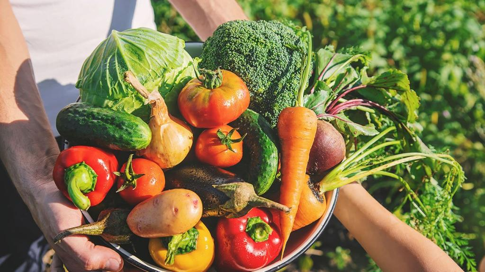
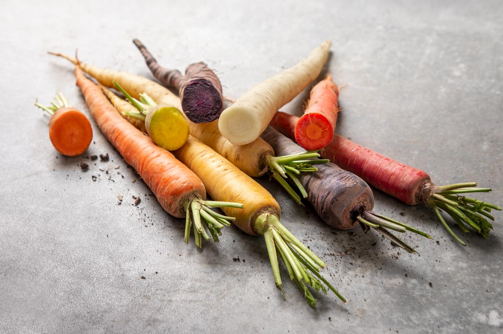
Los productos orgánicos son alimentos que se producen sin aditivos químicos ni compuestos sintéticos,favoreciendo tanto el medio ambiente como la salud. Estos alimentos se cultivan o crían utilizando sustancias naturales, sin emplear plaguicidas, fertilizantes artificiales,aguas residuales u otros químicos.
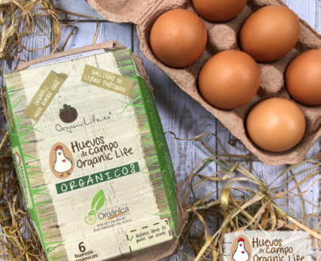 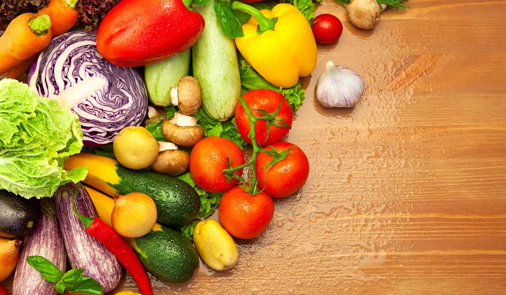 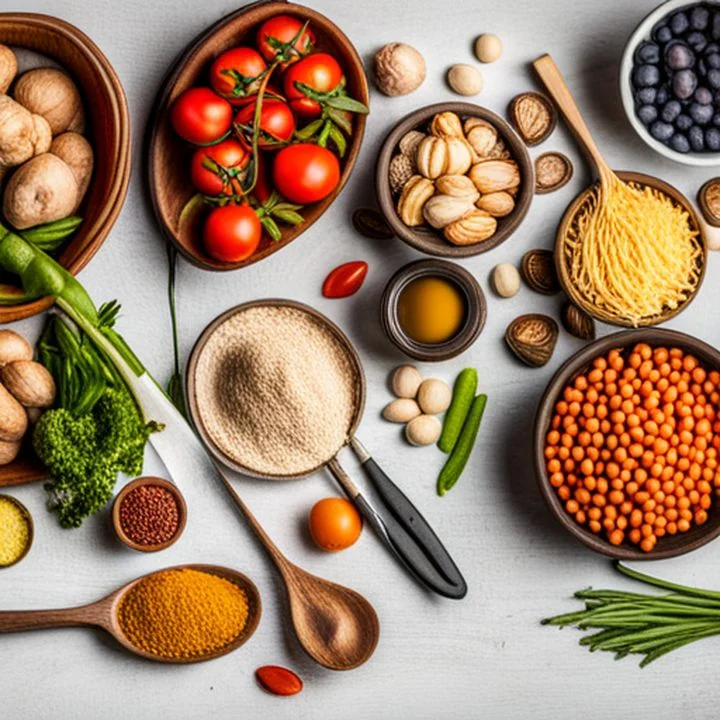